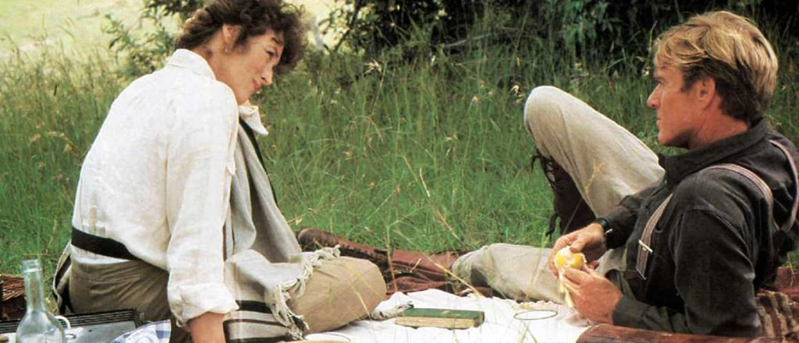
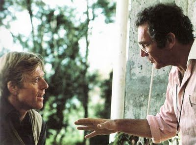
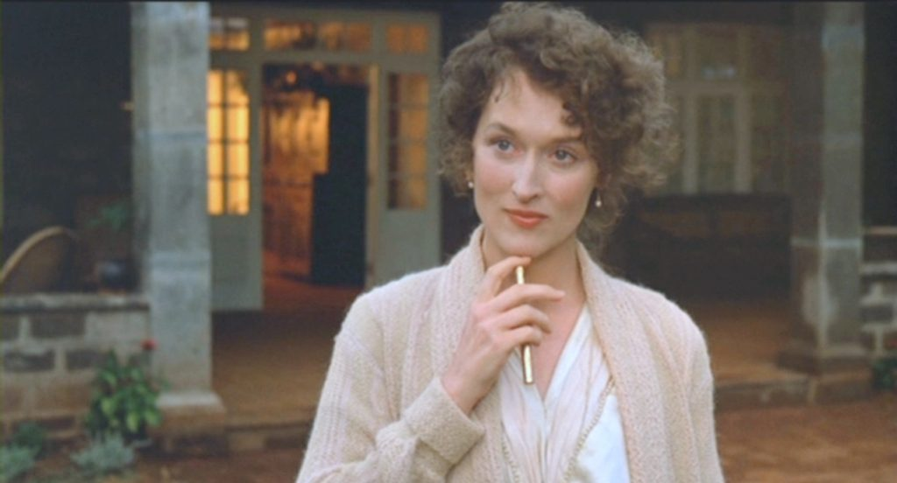
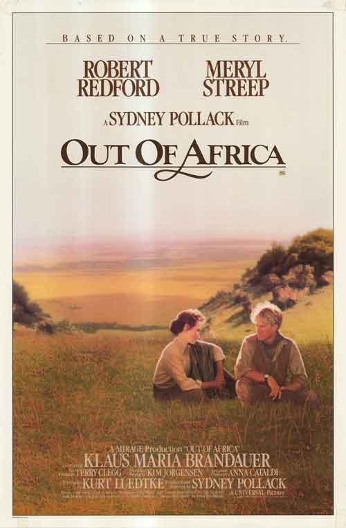
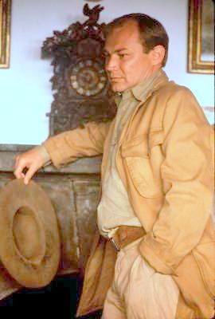
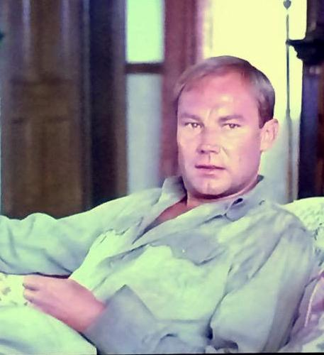

By Lucia Adams

In the cold summer of 1986 I was teleported from Forest Hills, New York to a coffee farm at the foot of the Ngong hills in 1918, visiting the warm plains and savannas, the Great RIft Valley and Ngorongoro Crater of East Africa. Cinematographer David Watkin perfectly captured its dangerous beauty in Sydney Pollack’s blockbuster film Out of Africa whose aerial panoramas accompanied by the dreamy musical score of English composer John Barry, including Mozart’s Clarinet Concerto and haunting African music, looked down into a Garden of Eden with Kikuyu tribesmen, wildlife — and colonial invaders.
So many elements of this film rank among the greatest in cinema history, besides the cinematography and score, a superb screenplay by Kurt Luedtke, loosely based on Karen Blixen’s semi-fictional 1937 memoir Out of Africa, her biographer Judith Thurman’s The Life of a Storyteller, (reading like a feminist tract of the 80s), and Errol Trzebinski’s hagiographical biography of Denys Finch Hatton, Silence Will Speak. Though the film (and to some degree the books) bristles with inaccuracies, historical and literary untruths I stopped counting them and decided that truth to art was the only thing that mattered.

Sydney Pollack, right, directing Robert Redford as Denys Finch Hatton.
And that was the art of producer and director Sydney Pollack who recreated the story of Karen Blixen’s life in Kenya while married to planter Baron Bror von Blixen, the philanderer who gave her syphilis then went off to the Tanganyikan border to fight in World War I. After they divorced she spent the next decade trying to make the farm profitable but mainly focused on pursuing the English aristocrat Denys Finch Hatton. They went on one safari after another, dined al fresco sometimes in the black velvet of the African night by candlelight, dancing to the Victrola under the stars, certainly making love (in an embarrassing scene) but he refused to commit to her no less get married. In the film version he changed his mind and was about to don a ball and chain but he crashed his Gypsy Moth and was killed.
The story line of unrequited love in a gorgeous setting was a perfect formula for commercial success as was the big name star casting, Pollack knew his offbeat semi-intellectual content and style, a tad abstract and universal was hip and artistic but his special gift of combining the lofty and the ordinary has been criticized as being middlebrow.
This snapshot of Bror Blixen and Eva Dickson was Pollack’s inspiration for the film’s iconic hair washing scene.
Meryl Streep landed the part of Karen, wearing a low-cut blouse and push up brassiere for the interview to emphasize her sex appeal which Pollack required, though to my mind only partly successfully. Streep did understand Karen’s superciliousness and the fact she was obsessed with her new title so she used an archaic accent that only the old Copenhagen aristocracy still used, the accent assuming a life of its own in the film.
She viewed Karen as an eccentric outsider, and said, “I like very much the fact that she had such a strong sense of herself and was basically un-conflicted. She knew who she was and what she wanted, was too demanding, too needy and even greedy and her attitude was ‘this is me, take it or leave it, boys.’”

Streep acted out this attitude so precisely her Karen was patronizing, unlikeable and charmless, even arrogant, however super charged with libido.
She is crazy about the handsome Swinburne-spouting dandy, Denys oddly played by the very California Robert Redford. .Pollack and Redford had been the best of friends since 1960 and the director knew the cucumber cool actor he had directed in The Way We Were, or Three Days of the Condor had superstar power so he had top billing over Streep who appears in virtually every scene.

Pollack said, “I had a picture in my mind of what Finch Hatton had to be in terms of this almost symbol of obsessive romance. He’s so elusive in life. If you read the books about him, he’s just a wisp of a character, just in and out, who represents the classic unattainable, romantic obsessive image.” Redford’s reticence and secretiveness was perfect. Redford said about his soulmate that, “Because of where he was from, South Bend, Indiana, Sydney had a real love of pop culture and pop celebrity, but he was smart enough to mask that with more abstract ways of thinking. He had a very strong sense of commerciality, and that’s why he always worked with stars.”

Klaus Maris Brandauer’s Bror Blixen.
Then there is Klaus Maris Brandauer as the beguiling mischievous utterly irresistible Bror Blixen a casting decision that was universally praised. The Austrian actor is uncannily like, no he actually IS, the real baron, insouciantly indifferent to the opinion of others. Pollack waited for months until he was free to play the part, his only choice for the role.
Brandauer said “It was a lot of fun (to work with him)” because they fought and had very different ideas about how the character should be played. I suspect the cinematic Bror was the actor’s choice, full of humor and good cheer and as his biographer Ulf Aschan wrote, a man whom women loved. This woman was no exception compelled years later to write a book about his life in Africa. It was the first and last time I ever fell in love with a screen character, perhaps because of his resemblance to a certain graf one Christmas in Munich.

Shooting the film over five months was very grueling, the schedule demanding the actors work six days a week. Malick Bowens perfect as Farah Aden said, ”After working I’d go to my hotel in Nairobi, where I’d hear radios playing Duran Duran,” ….then I’d wake up at 5 o’clock for the next day’s work.” He had a lot of respect for Pollack’s efficiency in getting the job done. “He works very fast and doesn’t do many retakes.” Pollack’s knowledge about the physical process of filmmaking was amazing (he could even fix cameras and technical equipment) There wasn’t very much he couldn’t do; he worried about everything and delegated very little or nothing.
In a script he would look for one word that he called “the spine” of the story and that word in Out of Africa, was “home”. It held the secret meaning of the movie associated as it was with what he called “the ache” having one chance at the deep love of a lifetime and losing it too early. It was the ache of perfect, private union destroyed by terrible, worldly chance.
Out of Africa set off a Laurenian tsunami of safari chic generating many sneers from critics and Beryl Markham a close friend of Denys, Bror and occasionally Karen said the characters were completely unrecognizable.